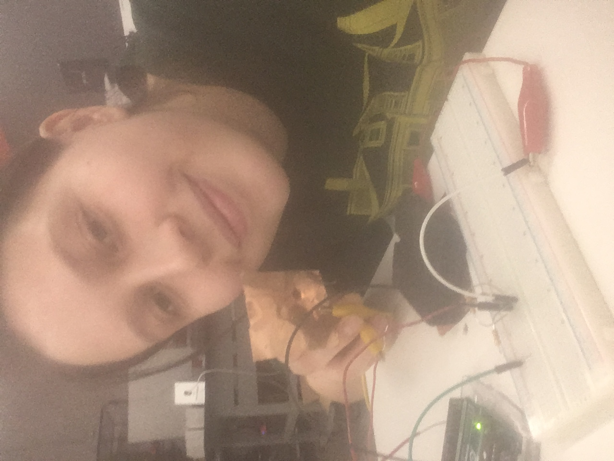
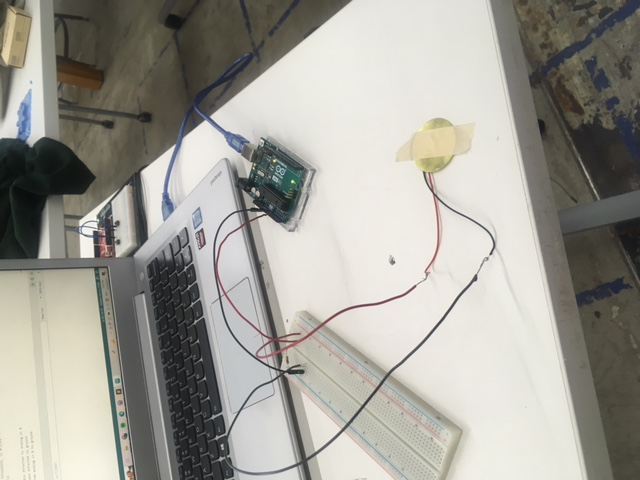
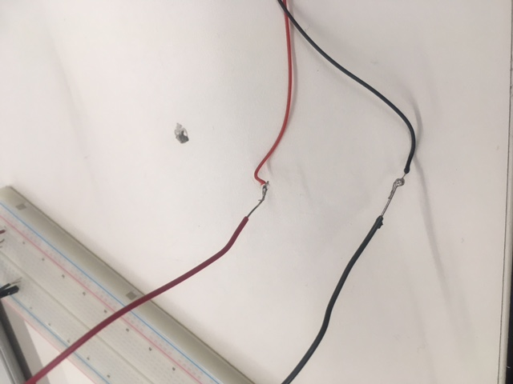
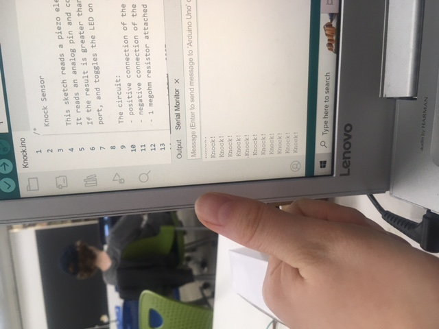

<br>
#### Week 6 and 7: Electronic Input and Output Devices
For electronic input and output weeks, I decided to start working on the contact mic for my final project. I know that most DIY contact mics are made with piezo sensors, so I decided to focus on them and and how they interact with MCUs.
But first, I started by following Nathan's basic tutorial for sensing with step-response, aka transmit-receive or tx-rx. I made a very basic force sensor!

Then, to start getting to know piezo sensors , I used the Arduino example sketch Knock, which uses a piezo element to detect a knocking sound. The circuit is very basic -- here is a photo.
I did a very poor job of soldering the piezo to red and grey wires to extend them -- but at least I tried!



Then, I decided to try to use the same piezo sensor, except as an output, because I learned that they can be both inputs and outputs!